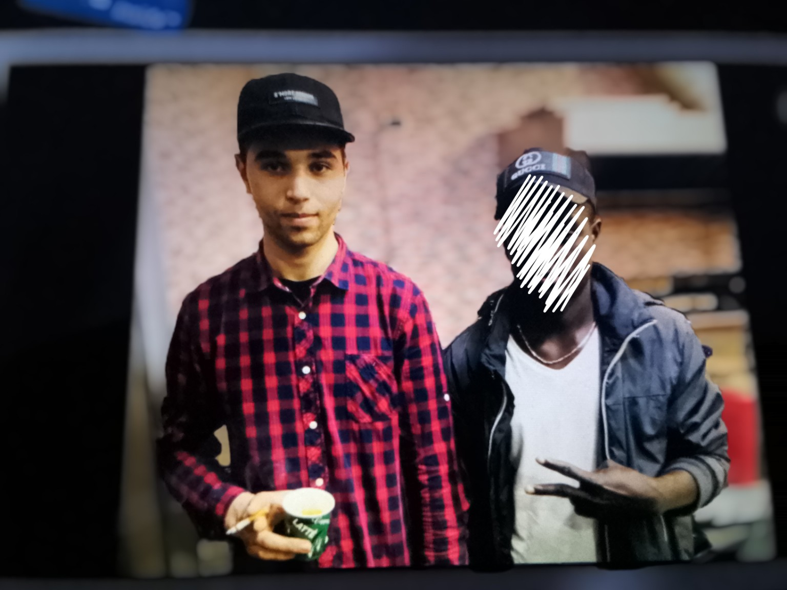
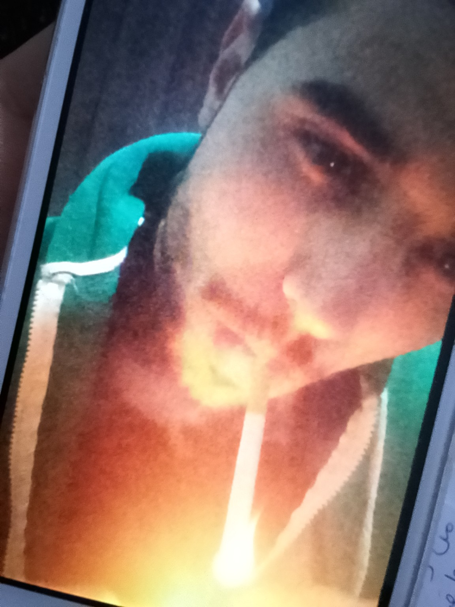
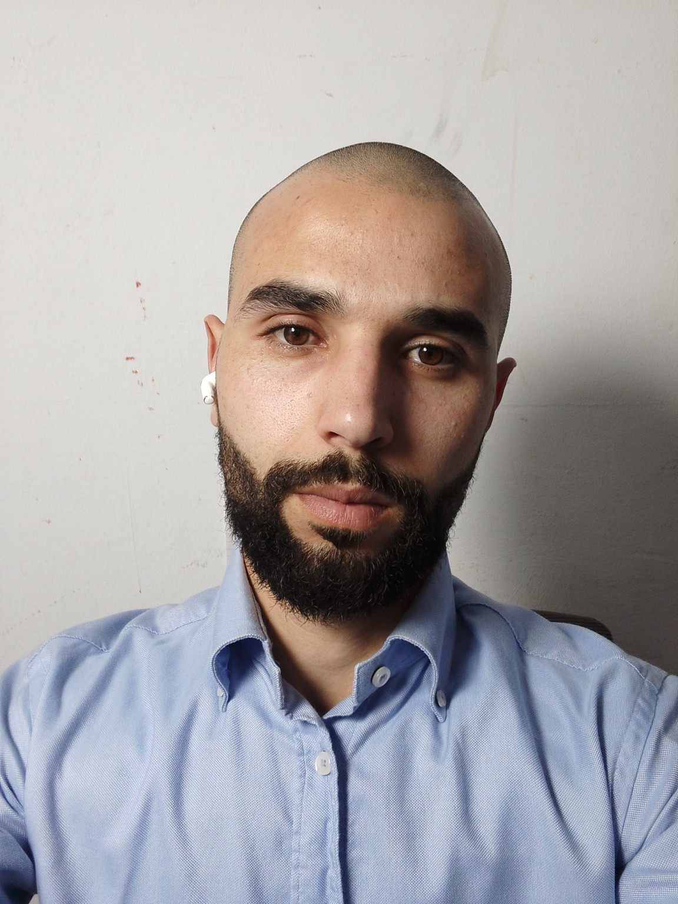

برنامج أعداء التدخين
اسمي انس القائد مدمن على التدخين "سابقا" لأكثر من 5 سنوات تركت التدخين بكل يسر سنة 2023 ، وبعد أكثر من 3 سنوات من دراسة برامج "بوب بروكتور" استطعت الخروج بهذا البرنامج الذي سوف يساعد اي مدمن على التخلص منه في اقل من 21 يوم وبشكل دائم ونهائي.
قبل الإقلاع عن التدخين
 بعد الإقلاع عن التدخين
الصورة الأخيرة (بالقميص السماوي) هي صورتي الحالية
من هو بوب بروكتور ؟

بوب بروكتور هو المعلم رقم واحد في العالم اليوم، وهو الشخص الذي سيخبرك كيف تعمل من الداخل وكيف تحقق اي شيئ في حياتك. برامجه منتشرة حول العالم وله اعمال ومحاضرات ودورات غيرت حياة الملايين، وينسب اليه الفضل عدد هائل من المليونيرات حول العالم. بوب بروكتور متخصص في فهم العقل الباطن والنماذج الذهنية والصورة الذهنية، وهو المرجع الاول في تعليم الانسان كيف يغير حياته من الداخل وليس من الخارج.
سوف اتطرق معك في هذا البرنامج الى :
- النماذج الذهنية "PARADIGM" : هي مجموعة من العادات المتأصلة في داخلك والتي تتحكم في سلوكك، من المهم جدا فهم النماذج قبل ان تفكر في ترك التدخين، سوف اشرحها لك وسوف نغير النماذج القديمة.
- شخصية العصا : وهي رسم يوضح عمل الانسان كشخص حيث يتكون من عقل واعي وباطن وجسد، سوف نعمل على الواعي ثم الباطن ثم الجسد في عملية التخلص من التدخين.
- الصورة الذهنية : هي صورة انشأتها انت عن نفسك من خلال اراء من حولك ومن خلال خبرتك الشخصية والتعليم، وهي صورة خاطئة 100%، هذه الصورة ترى بها نفسك لا اقصد صورتك في المرآة بل صورة على شاشة عقلك. سوف ارشدك الى تغييرها بالكامل واضافة صورة جديدة في مكانها. لا يمكن هزيمة صورتك الذهنية ولا يمكنك الانحراف عنها يمكن فقط تغييرها. الصورة الذهنية هي آلية تحكم اوتوماتيكية موجودة في داخلك وداخلي وظيفتها الحفاظ على مسار محدد، مثل الطيار الآلي في الطائرة. لا يمكنك ترك التدخين لان صورتك الذهنية تقول انك مدخن.
- حاجز الرعب : وهي عملية مكونة من اربع خطوات، عندما تقرر ترك التدخين قرار ملتزم سيظهر امامك جدار وهمي وستشعر بخوف شديد وألم في المعدة، النموذج يحاربك صورتك الذهنية تريد ارجاعك. اما ان تعبر ذلك الجدار الوهمي وتصل الى الحرية او ترجع الى حيثما انت الان وتصبح عبدا للتدخين للابد. ترك التدخين لعبة عقلية بالكامل، سوف ارشدك كيف تعبر ذلك الجدار الوهمي لاني كنت هناك وقد عبرته بسهولة.
- اتخاذ القرار : سوف ارشدك في عملية اتخاذ القرار بترك التدخين، اذا كنت مثلي فأنا وصلت الى المرحلة الجامعية وكان والديّ يأخدون جميع قراراتي من خوفهم علي، لم اتعلم ابدا اتخاذ القرار. وهذا هو اكثر سبب من اسباب فشل 99% من الناس.
سوف آخذ بيدك في هذه الرحلة لترك التدخين خلال 21 يوم. سوف ابدأ معك بالدراسة كل يوم ثم سنبدأ في التطبيق. مع الدراسة اليومية والتطبيق ستجد نفسك قد تجاوزت التدخين وسوف تحقق اي شيئ تريده في حياتك لان ما سوف تتعلمه ليس خاص فقط بترك التدخين بل بتحقيق اي هدف في الحياة.
صدقني الامر لا يتعلق بالخارج بل بالداخل، ما يجري في داخل نفسك. لكي تترك التدخين يجب ان تفهم نفسك اولا.
قم بتسجيل معلوماتك في الاسفل
ودعنا ننظر هل يمكننا ان نعمل معا